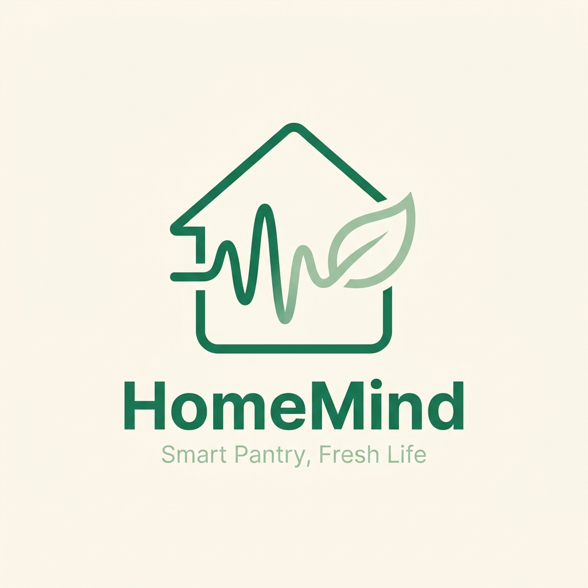
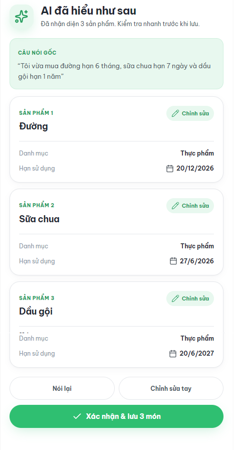

CHECKPOINT EXE2·GIAI ĐOẠN TRIỂN KHAI
MVP
HomeMind
Trợ lý AI quản lý đồ dùng gia đình bằng
giọng nói tiếng Việt
Từ kết quả khảo sát thị trường kỳ trước, nhóm chuyển sang xây MVP, đưa sản phẩm lên Store và kiểm chứng bằng Pilot 10 tuần.
🎤
VOICE INPUT · 3–5 GIÂY
“Tôi vừa mua sữa chua, hạn 7 ngày”
AI → JSON draft
5
tính năng cốt lõi
10
tuần Pilot
50
tester mục tiêu
80%
AI accuracy


Kỳ này: bắt đầu build
From research to MVP